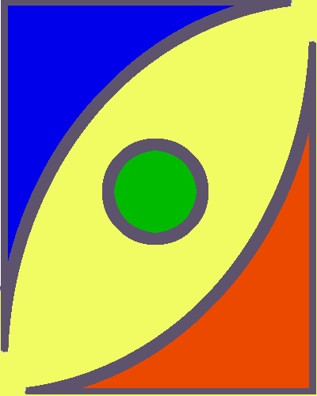

Neste site compartilhamos artigos e informações relevantes sobre o DALTONISMO, para sanar, todas as duvidas e curiosidades.
Iniciar TesteDaltonismo é um distúrbio da visão que interfere na percepção das cores. Também chamado de discromatopsia ou discromopsia, sua principal característica é a dificuldade para distinguir o vermelho e o verde e, com menos frequência, o azul e o amarelo.
Na quase totalidade dos casos, o daltonismo é uma condição geneticamente hereditária e recessiva, ligada ao cromossomo sexual X. Raramente, o transtorno afeta as mulheres, porque possuem dois cromossomos X. Quando elas recebem de um dos pais o cromossomo com a mutação genética, o outro, que é normal, compensa a alteração.
O fato é que, apesar de distinguirem normalmente as cores, elas são portadoras do gene defeituoso e podem transmiti-lo para seus filhos. No entanto, só serão daltônicas, se receberem do pai e mãe o cromossomo X com o gene anômalo.
O tipo mais comum de daltonismo causado por causas familiares é dano ou redução da função con pigmento vermelho ou verde. Existem quatro tipos de daltonismo vermelho-verde.
Esse daltonismo se deve à ocorrência incomum de pigmentos de cone vermelho. Nesse tipo de daltonismo, vermelho, laranja e amarelo aparecem em verde e as cores não são brilhantes. Esta condição é benigna e geralmente não afeta a vida diária.
Nesse daltonismo, os pigmentos do cone vermelho param de funcionar e a cor vermelha parece preta. Algumas variantes de laranja, amarelo e verde aparecem todas como amarelo.
Este é o tipo mais comum de daltonismo. Possui um pigmento de cone verde incomum. O amarelo e o verde aparecem em vermelho, e o roxo e o azul são difíceis de identificar. Esta condição é benigna e geralmente não afeta a vida diária.
Nesse daltonismo, os pigmentos do cone verde param de funcionar. Eles veem as cores vermelhas como amarelo-acastanhado e o verde como amarelo-escuro.
O daltonismo azul-amarelo é mais raro do que o daltonismo vermelho-verde. Nesse caso, o pigmento do cone azul (tritão) está ausente ou tem uma função limitada. Existem dois tipos de daltonismo azul-amarelo.
Pigmentos de cone azul têm menos função. A cor azul parece verde e não pode ser fácil diferenciá-la do rosa ao amarelo e vermelho.
Pessoas com Tritanopia não têm células con azuis. O azul parece verde nisso, e a cor amarela parece roxa ou marrom claro.
Pessoas com daltonismo (monocromacia) não veem as cores e sua clareza de visão também pode ser afetada. Existem dois tipos de monocromacia.
Neste, dois ou três dos três pigmentos de células cônicas não funcionam. Pessoas com con monocromacia têm dificuldade em distinguir entre cores porque o cérebro precisa de sinais de diferentes tipos de cones para ver as cores. Essa comparação não é possível quando apenas um tipo de engodo funciona.
Está presente desde o nascimento. Não contém nenhum dos pigmentos funcionais das células Con. Pessoas com monocromacia de bastonete veem o mundo em preto, branco e cinza. Pessoas com monocromacia de bastão são fotofóbicos e muito desconfortáveis em ambientes claros.
Existem muitas maneiras de testar os defeitos da visão de cores, mas entre todas elas o teste da placa de ishihara é o método comum, isso testará o daltonismo vermelho-verde. Este teste provavelmente é usado para visão de cores regular em empregos públicos, escolas ou médicos.
O teste de ishihara inclui 38 placas de círculos que são criados por pontos aleatórios exclusivos em mais de uma cor. O local será mostrado para a pessoa, e será perguntado qual número será visto na placa.
Algumas das placas contêm informações que as pessoas com visão normal para daltonismo podem ver. Por outro lado, outras placas contêm informações que apenas pessoas com daltonismo entendem ou veem.
Se a pessoa cometer alguns erros durante o teste, ela será diagnosticada com daltonismo. Placas especiais são usadas para diagnosticar o daltonismo em crianças.
Fazer TesteCom a grande disponibilidade do acesso à Internet, uma parcela dos usuários pode apresentar alguma limitação que pode dificultar o acesso à informação, como por exemplo, deficiências visuais.
Assim, a acessibilidade na Web se torna cada vez mais relevante e fundamental para que todos possam ter acesso à informação da mesma maneira. Como o uso de cores se faz muito presente em interfaces Web, usuários portadores da condição de daltonismo podem apresentar dificuldades para compreender e interagir com essas interfaces de forma eficiente.
Conheça alguns métodos:
Algumas combinações de cores são já conhecidas por causarem confusão entre daltônicos, como por exemplo, verde e vermelho. Mas, como existem diferentes intensidades e gêneros de daltonismo, diversas cores possuem tonalidades que são facilmente confundidas. Considerando essa afirmação, para garantir a acessibilidade de daltônicos na Web, deve-se evitar combinações de cores que podem causar confusão ou dificuldade de reconhecimento por daltônicos como:
Como costuma-se empregar o uso de cores para representar alguns estados, como mensagens ou alertas, consequentemente, portadores da condição de daltonismo podem ter dificuldade na distinção de cores ou interpretações errôneas da mensagem. Considerando que a gama de cores acaba sendo limitada pelas capacidades da visão, se torna difícil representar vários estados diferentes e associá-los a cores.
Como já ressaltado, é necessário providenciar estilos diferentes para elementos interativos, de forma que sua identificação não dependa apenas do uso de cores. Assim, é necessário sinalizar não só a existência do elemento, mas também a 41 possibilidade de interação de alguma maneira, como por exemplo, estando sob o apontador do mouse ou que está sendo clicado.
Importante: o ícone de acessibilidade (figura abaixo), quando clicado, mostrará para daltônicos ou não a cor presente nos textos coloridos. Este ícone está disponível no canto superior direito de todas as páginas deste site;
Autores: Lígia Fernanda Bruni e Antonio Augusto Velasco e Cruz.
DownloadAutores: Manuela da Luz Fontes Bahr, Analúcia Gebler Phillipi, Elisa Oderich e Claudia Ângela Maziero Volpato.
DownloadAutor: FILIPE FRANCHINI HRUBA
Download